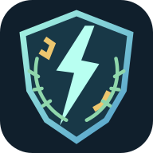

Ostrom
Négy kaszt, fejlődő skillek és társak. Végtelen hullámok vagy expedíció sárkányfináléval.

RiftBrambleGitHub ↗OFFLINE ANDROID-JÁTÉK · MAGYAR FELÜLET
Tartsd vissza az ostromot. Járd be az űrt. Építs győztes paklit. Három külön kaland, egy közös világ — internetkapcsolat nélkül is.
↓ APK letöltése 1.6.1Négy kaszt, fejlődő skillek és társak. Végtelen hullámok vagy expedíció sárkányfináléval.
Három hajóosztály, modulok és választható útvonalak. Ments kapszulákat, védd meg a konvojt.
34 lap, körökre osztott harc, nyolc állomás. Minden döntéssel alakítsd a következő összecsapást.
1.6.1 · 2026. NOVEMBER 5.
Kompakt Ostrom-felület, oldalra görgethető skill- és buffikonok, kisebb minimap és vezérlők. A részletek koppintásra, szünetelő harc mellett nyílnak meg. A korábbi mentések megmaradnak.
Részletes változásnapló ↗Frissítéskor ne töröld a már telepített játékot. Ha az Android aláírásütközést jelez, állj meg, és előbb exportáld a mentésedet a meglévő alkalmazásból.
Az eredeti, aláírt 1.6.1-es APK ellenőrzőösszege:
228aa4d5678df1aee30f681b1822be189e507102ec53220a85cad25c03c4a9d7